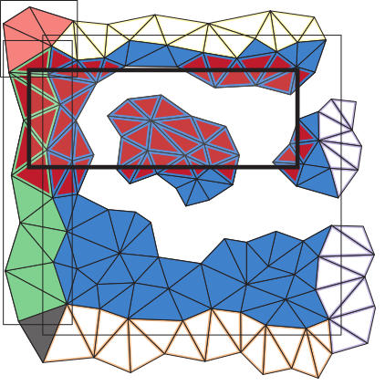

|

Tetrahedral trees In this library we address the problem of performing efficient spatial and topological queries on large tetrahedral meshes with arbitrary topology and complex boundaries. Such meshes arise in several application domains, such as 3D Geographic Information Systems (GISs), scientific visualization, and finite element analysis. To this aim, we have defined the Tetrahedral trees, a family of spatial indexes based on a nested space subdivision (an octree or a kD-tree) and defined by several different subdivision criteria. In this library, we provide efficient algorithms for spatial and topological queries on tetrahedral meshes. The source code and additional information can be found on GitHub. Main paper:
|
Riccardo Fellegara |